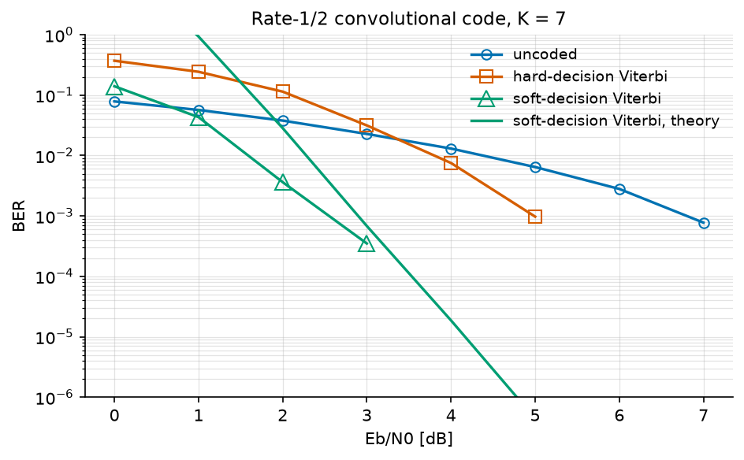
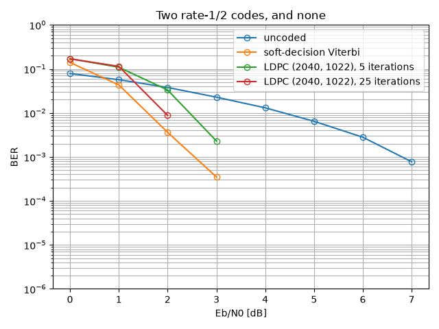

Channel Coding#
Every tutorial so far has read the received signal as well as it could and accepted the errors that remained. This one refuses them. A channel code adds redundancy at the transmitter so that the receiver can tell, from the structure of what it received, that a particular decision must be wrong – and correct it.
The trade is explicit and it is not free: to send \(k\) useful bits the transmitter emits \(n > k\) of them, so at constant symbol rate the useful throughput drops by the code rate \(R = k/n\). What one buys in exchange is a coding gain: the same error rate at a lower \(E_b/N_0\), where \(E_b\) is the energy per useful bit – which is the only comparison that means anything, and the reason every curve in this tutorial is plotted against \(E_b/N_0\) rather than SNR.
Note
Before you start. Monte Carlo Simulation over AWGN Channel introduced monte_carlo and
plot_error_rate, both used here without comment. Nothing else is
assumed: the codes are built from scratch.
What you’ll learn:
How a convolutional encoder works, and what its generator polynomials mean.
What the Viterbi algorithm decides, and why soft decisions are worth 2 dB over hard ones.
How to bound the error rate of a code analytically, from its distance spectrum alone – no simulation.
How an LDPC code differs, and what its iterations buy.
Why a simulated BER of exactly zero is not a result.
Introduction#
Prerequisites#
Make sure you have the following Python libraries installed:
numpy
matplotlib
comnumpy
Import Libraries#
import time
import numpy as np
import matplotlib.pyplot as plt
from comnumpy import monte_carlo
from comnumpy.core import Sequential
from comnumpy.core.channels import AWGN
from comnumpy.core.generators import SymbolGenerator
from comnumpy.core.mappers import SymbolDemapper, SymbolMapper
from comnumpy.core.metrics import compute_ser
from comnumpy.core.visualizers import plot_error_rate
from comnumpy.fec import (ConvolutionalEncoder, LDPCDecoder, LDPCEncoder,
ViterbiDecoder)
from comnumpy.fec.analysis import distance_spectrum, union_bound_ber
from comnumpy.fec.ldpc import make_gallager_parity_check
Define Parameters#
The modulation is BPSK – one bit per symbol, which keeps the accounting simple – and the codes below all have rate 1/2.
BPSK = np.array([1.0 + 0.0j, -1.0 + 0.0j]) # bit 0 -> +1, bit 1 -> -1
ebn0_dB = np.arange(0.0, 8.0, 1.0)
n_bits = 40000
rate = 0.5 # both codes below are rate 1/2
def snr_dB(ebn0, code_rate):
"""Es/N0 in dB for BPSK: one bit per symbol, code_rate of them useful."""
return ebn0 + 10 * np.log10(code_rate)
That helper deserves a line of its own, because it is where most coded simulations go wrong. The channel sees symbols, so it is parameterized by \(E_s/N_0\); a code changes how many useful bits a symbol carries, so at constant \(E_b/N_0\)
A rate-1/2 code therefore runs the channel 3 dB colder than the uncoded link it is compared with. Forget that shift and the code appears to gain 3 dB it has not earned.
The Convolutional Encoder#
A convolutional encoder has no block structure: it slides a window of \(K\) bits – the constraint length – along the input and emits, for each input bit, \(n\) modulo-2 sums of the bits in that window,
The masks \(g_i\) are the generator polynomials, written in octal by convention. The pair \((133, 171)_8\) with \(K = 7\) is the one NASA standardized and every textbook tabulates, so it is the default here:
The window is the state: the encoder remembers \(K-1 = 6\) past bits, so it has \(2^6 = 64\) states, and the sequence of states it walks through is a path in a trellis. That trellis is the object the decoder searches.
encoder = ConvolutionalEncoder((0o133, 0o171))
generators = []
for value in encoder.g:
generators.append(oct(value))
print(f"generators {tuple(generators)} "
f"K = {encoder.K} states = {2 ** (encoder.K - 1)} "
f"rate = {encoder.rate}")
print("4 bits in ->", encoder(np.array([1, 0, 1, 1])), "(with the tail)")
spectrum = distance_spectrum((0o133, 0o171), n_terms=4)
print(f"free distance d_free = {spectrum.d_free}")
def row(label, values):
"""One line of the distance spectrum, six terms wide."""
line = label
for value in values[:6]:
line += f"{value:7d}"
return line
print(row("d ", spectrum.distances))
print(row("a_d ", spectrum.a_d))
print(row("beta_d ", spectrum.beta_d))
generators ('0o133', '0o171') K = 7 states = 64 rate = 0.5
4 bits in -> [1 1 0 1 0 0 0 1 1 0 1 0 0 0 1 0 0 1 1 1] (with the tail)
free distance d_free = 10
d 10 11 12 13 14 15
a_d 11 0 38 0 193 0
beta_d 36 0 211 0 1404 0
Four input bits produced twenty output bits rather than eight: the encoder is terminated, so \(K - 1 = 6\) zero bits are appended to flush the register and bring it back to the all-zero state. On a short block that overhead is visible; on a realistic one it is not.
The last three lines are the code’s distance spectrum, and they are worth more than they look. \(d_{\mathrm{free}} = 10\) is the smallest Hamming distance between two distinct code sequences; \(a_d\) counts the error events at distance \(d\), and \(\beta_d\) counts the information bits those events get wrong. They come from an enumeration of the trellis, not from a simulation, and the last section of this tutorial turns them into a bound.
The Viterbi Decoder#
The optimal decoder returns the code sequence closest to what was received – over sequences, not over bits. Written naively that is a search over \(2^k\) paths, which is hopeless. Viterbi’s observation is that the metric is additive along the trellis, so at each state only the best path arriving there can ever survive:
Sixty-four numbers are carried from one trellis step to the next, whatever the length of the message: add, compare, select. The decoder is exact – it is maximum likelihood over sequences – and its cost is linear in the block length.
Everything hinges on the branch metric \(\lambda_t\), and this is where the two flavours part:
The hard decoder is given bits: the demapper has already decided, and the metric can only count disagreements. The soft decoder is given the demapper’s log-likelihood ratios, so a sample that fell halfway between the two constellation points weighs less than one that landed squarely on the wrong side. The information thrown away by deciding too early is worth about 2 dB, and the simulation below measures exactly that.
def get_uncoded_chain():
return Sequential([
SymbolGenerator(2, name="tx"),
SymbolMapper(BPSK),
AWGN(snr_dB=0.0, name="noise"),
SymbolDemapper(BPSK),
], taps=["tx"], name="uncoded BPSK")
def get_coded_chain(soft):
return Sequential([
SymbolGenerator(2, name="tx"),
ConvolutionalEncoder((0o133, 0o171)),
SymbolMapper(BPSK),
AWGN(snr_dB=0.0, name="noise"),
SymbolDemapper(BPSK, soft=soft),
ViterbiDecoder((0o133, 0o171), soft=soft),
], taps=["tx"], name=f"K=7 convolutional, {'soft' if soft else 'hard'}")
curves = {}
for label, chain, code_rate in (("uncoded", get_uncoded_chain(), 1.0),
("hard-decision Viterbi", get_coded_chain(False), rate),
("soft-decision Viterbi", get_coded_chain(True), rate)):
start = time.perf_counter()
results = monte_carlo(chain, "noise.snr_dB", snr_dB(ebn0_dB, code_rate),
{"ber": compute_ser}, n_bits, reference="tx", seed=4)
curves[label] = results["ber"]
line = f"{label:24s} "
for value in results["ber"]:
line += f"{value:.2e} "
print(line + f" ({time.perf_counter() - start:.1f} s)")
The chain, as the chain itself describes it:
flowchart LR
tx["SymbolGenerator"]
conv_encoder["ConvolutionalEncoder"]
symbol_mapper["SymbolMapper"]
noise["AWGN"]
symbol_demapper["SymbolDemapper"]
viterbi["ViterbiDecoder"]
tx --> conv_encoder
conv_encoder --> symbol_mapper
symbol_mapper --> noise
noise --> symbol_demapper
symbol_demapper --> viterbi
classDef tapped stroke-dasharray: 4 2
class tx tapped
uncoded 7.86e-02 5.68e-02 3.79e-02 2.28e-02 1.31e-02 6.45e-03 2.80e-03 7.75e-04 (0.0 s)
hard-decision Viterbi 3.71e-01 2.43e-01 1.14e-01 3.15e-02 7.52e-03 9.75e-04 0.00e+00 0.00e+00 (8.1 s)
soft-decision Viterbi 1.40e-01 4.32e-02 3.63e-03 3.50e-04 0.00e+00 0.00e+00 0.00e+00 0.00e+00 (8.9 s)
Three readings, and the first one is a warning.
A code can make things worse. At 0 dB the hard-decision decoder is at 0.371 where the uncoded link is at 0.079 – almost five times worse. This is not a bug: below a threshold the channel produces more errors than \(d_{\mathrm{free}}\) allows the code to correct, the decoder picks the wrong path, and a single wrong path corrupts a whole run of information bits. The two curves cross around 3 dB, and only above that crossing does the code earn its name.
Soft decisions are worth about 2 dB. At \(10^{-3}\), hard decoding needs 5 dB and soft decoding a little under 3 – the classic figure for this code. Nothing was added to the receiver except not throwing information away: the same trellis, the same recursion, a different branch metric.
And the last two columns are not results. Zero errors in 40 000 bits does not mean the BER is zero; it means it is somewhere below roughly \(1/40000 = 2.5 \times 10^{-5}\) and this simulation cannot see it. The figure drops those points rather than drawing them at zero on a logarithmic axis. Which is exactly why the next section exists.
The Union Bound#
Where the simulation runs out of symbols, analysis takes over. An error event is a path that leaves the correct one and merges back into it; if such an event is at Hamming distance \(d\), the noise must have pushed the received sequence closer to it than to the truth, which for BPSK over AWGN has probability \(Q\big(\sqrt{2Rd\,E_b/N_0}\big)\). Summing over every error event – counting each one as if it acted alone, hence a bound rather than an identity – gives
with \(\beta_d\) the information-weight spectrum printed above. This is a closed form: no simulation, no random draw, and no floor at \(2.5\times10^{-5}\).
bound = union_bound_ber(distance_spectrum((0o133, 0o171), n_terms=8), ebn0_dB)
line = "union bound "
for value in bound:
line += f"{value:.2e} "
print(line)
ax = plot_error_rate(ebn0_dB, curves, theory={"soft-decision Viterbi": bound},
x_theory=ebn0_dB, xlabel="Eb/N0 [dB]", ylabel="BER",
title="Rate-1/2 convolutional code, K = 7")
ax.set_ylim(1e-6, 1)
plt.tight_layout()
union bound 1.82e+01 9.32e-01 2.85e-02 6.81e-04 1.87e-05 4.43e-07 5.61e-09 2.70e-11
{kind=link}

At low \(E_b/N_0\) the bound is above 1, which is true and useless – a union bound counts overlapping events several times, and at 0 dB there are many. It becomes informative around 2 dB and tight from 3 dB on: at 3 dB it gives \(6.8 \times 10^{-4}\) against a measured \(3.5\times 10^{-4}\), a factor of two, and the gap keeps closing because the \(d_{\mathrm{free}}\) term comes to dominate the sum. From there the bound is the curve, and it costs nothing to evaluate.
That is the practical division of labour: simulate where a simulation can resolve the error rate, bound where it cannot.
An LDPC Code, at the Same Rate#
A convolutional code has memory but no block structure. A low-density parity-check code is the opposite: a block of \(n\) bits is a codeword if and only if
for a parity-check matrix \(\mathbf{H}\) that is sparse – Gallager’s regular construction puts exactly \(d_v\) ones per column and \(d_c\) per row, here 3 and 6, which fixes the rate at \(1 - d_v/d_c = 1/2\).
Sparsity is what makes decoding possible. Read \(\mathbf{H}\) as a bipartite graph – one node per bit, one node per parity check, an edge for each one – and decode by passing messages along its edges: each check tells each bit what the other bits in that check imply about it, each bit collects what its checks say, and the process repeats. The min-sum rule used here approximates the exact update by
which is why the decoder needs the demapper’s LLRs: an LDPC decoder is soft by construction, there is no hard-decision variant of it.
H = make_gallager_parity_check(2040, d_v=3, d_c=6, seed=1)
ldpc_encoder = LDPCEncoder(H)
print(f"\nLDPC: H is {H.shape[0]} x {H.shape[1]}, k = {ldpc_encoder.k} "
f"information bits, rate = {ldpc_encoder.rate:.3f}, "
f"column weight {H.sum(axis=0)[0]}, row weight {H.sum(axis=1)[0]}")
n_frames = 40
ldpc_curves = {}
for n_iter in (5, 25):
link = Sequential([
SymbolGenerator(2, name="tx"),
LDPCEncoder(H),
SymbolMapper(BPSK),
AWGN(snr_dB=0.0, name="noise"),
SymbolDemapper(BPSK, soft=True),
LDPCDecoder(H, n_iter=n_iter),
], taps=["tx"], name=f"LDPC, {n_iter} iterations")
results = monte_carlo(link, "noise.snr_dB", snr_dB(ebn0_dB, ldpc_encoder.rate),
{"ber": compute_ser}, (n_frames, ldpc_encoder.k),
reference="tx", seed=6)
ldpc_curves[f"LDPC (2040, {ldpc_encoder.k}), {n_iter} iterations"] = results["ber"]
line = f"LDPC {n_iter:2d} iterations "
for value in results["ber"]:
line += f"{value:.2e} "
print(line)
LDPC: H is 1020 x 2040, k = 1022 information bits, rate = 0.501, column weight 3, row weight 6
LDPC 5 iterations 1.70e-01 1.09e-01 3.31e-02 2.30e-03 0.00e+00 0.00e+00 0.00e+00 0.00e+00
LDPC 25 iterations 1.70e-01 1.14e-01 8.78e-03 0.00e+00 0.00e+00 0.00e+00 0.00e+00 0.00e+00
comparison = {"uncoded": curves["uncoded"],
"soft-decision Viterbi": curves["soft-decision Viterbi"]}
comparison.update(ldpc_curves)
ax = plot_error_rate(ebn0_dB, comparison, xlabel="Eb/N0 [dB]", ylabel="BER",
title="Two rate-1/2 codes, and none")
ax.set_ylim(1e-6, 1)
plt.tight_layout()
plt.savefig(f"{img_dir}/channel_coding_fig2.png")
mermaid_dir = "../../docs/tutorials/mermaid/"
for diagram_name, diagram_chain in [("channel_coding", get_coded_chain(True))]:
with open(f"{mermaid_dir}/{diagram_name}.mmd", "w") as stream:
stream.write(diagram_chain.to_mermaid())
{kind=link}

The shape of the curve is what distinguishes the two families. The convolutional code improves steadily; the LDPC code does almost nothing until about 2 dB and then falls off a cliff – the waterfall. That threshold behaviour is the point of the construction, and it is why long LDPC codes get within a fraction of a decibel of capacity where a convolutional code cannot.
The iterations show the mechanism at work: at 2 dB, five iterations leave \(3.3\times10^{-2}\) and twenty-five leave \(8.8\times10^{-3}\). Below the threshold, more iterations change nothing – messages circulate without converging; above it, they are what carries the decoder to the codeword. At 0 dB the two curves are the same number to three digits, which says exactly that.
When the Sweep Is Too Slow#
The two Viterbi sweeps took about ten seconds each, and a coded simulation that has to resolve \(10^{-6}\) takes minutes. The points of a sweep are independent, so they can be run at the same time:
results = monte_carlo(chain, "noise.snr_dB", snr_dB(ebn0_dB, rate),
{"ber": compute_ser}, n_bits, reference="tx", seed=4,
n_jobs=4)
The curve is identical, value for value, not merely statistically
equivalent: every point already draws from its own child seed, so which
worker runs it changes nothing. That is also why seed= becomes mandatory
when n_jobs is not 1.
Two practical points. Workers are processes, so the chain and the metrics are
pickled into them – a metric written as a lambda cannot make the trip,
and must be a module-level function. And a script that calls a parallel sweep
must guard its body:
if __name__ == "__main__":
main()
without which each worker re-imports the script and runs it again. Both cases raise an error that says so.
It is not free either: starting a worker costs about 130 ms, so a sweep whose points take a millisecond will be slower in parallel. Around 200 ms a point, four cores return about 2.7x.
Conclusion#
You have coded a link, decoded it two ways, bounded what it can do, and compared it with a code built on an entirely different principle.
You have learned how to:
Read generator polynomials, and what the constraint length costs and buys.
Tell what the Viterbi recursion computes, and why soft decisions are worth 2 dB.
Turn a distance spectrum into a union bound, and use it where simulation cannot reach.
Decode an LDPC code by message passing, and recognize a waterfall.
Run a sweep in parallel without changing its result.
From here, you can:
Put this code in front of one of the earlier channels – the OFDM link of OFDM Tutorial is exactly the case where coding across the subcarriers repairs the ones a notch destroyed.
Change the constraint length and watch \(d_{\mathrm{free}}\) and the decoder cost grow together.
Increase the LDPC blocklength and see the waterfall sharpen.